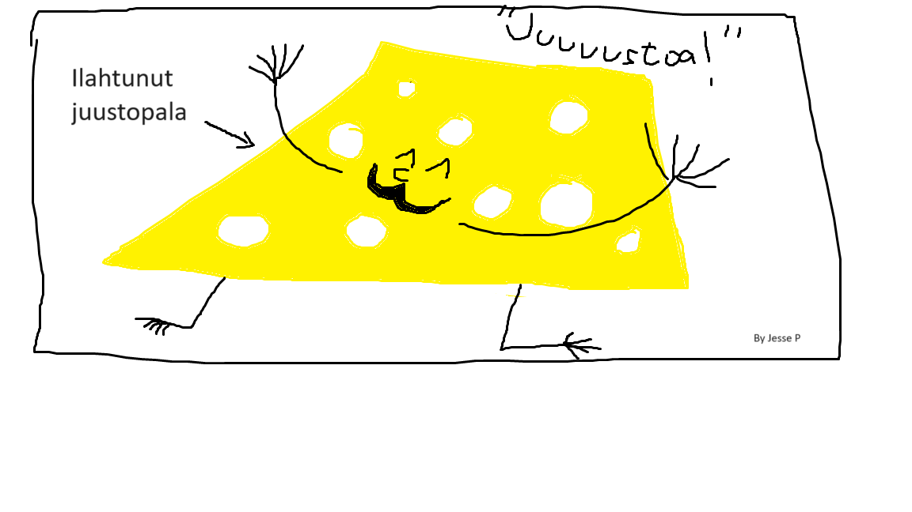

Oodiiiiiiiii55dkfgkdfk juustolle
Tämä sivusto kertoo juustosta
Jos loukkaannut helposti juustosta, tämä sivusto ei ole sinulle. Myös juuston kieltäjiä ei täällä kuunnella.
Tässä faktatietoa juustosta juustonvärisen laatikon sisällä
Juusto on elintarvike, joka on valmistettu juoksettamisen ja maitohappokäymisen avulla.
Juustoilla on eri luokituksia. Niillä on eri rasvapitoisuuksia, kovuuksia ja kypsytystapoja. Myös maidon alkuperällä on keskeinen rooli juuston luomisessa
Juustoilla ei tieteellisesti ole todettu olevan kognitiivisia toimintoja, mutta väitän, että jokaisella juustolla on sielunsa.
Juusto on kaunista, tunteellista ja ajatusta herättävää. Juusto on verrattavissa taiteeseen.
Alla kuva komeasta, kunnon juustosta.

MAISK! Söisin!
Lista juustoista, joista en pidä:
- -
- -
- -
- -
- -
- -
Tässä linkki, josta et pääse minnekään:
Linkki
Onko kuu tehty juustosta?

Kyllä. Kuu koostu täysin juustosta. Tämä tulee esiin täydellisesti Nick Parkin 1989 ohjaamassa dokumentissa, "Wallace & Gromit - A Grand Day Out".
Dokumentissa kaksi tutkimusmatkailijaa matkaavat kuuhun ja ottavat palan kuun pinnalta. Tutkija Wallace iloisesti levittää palan kuuta keksin päälle, minkä jälkeen hän ravitsee itsensä sillä.
Kuu osoittautui olevan atomirakenteeltaan täysin juustoa
Todistusaineisto
Olen yrittänyt olla yhteydessä NASAan (The National Aeronautics and Space Administration),
mutta he ovat estäneet Twitter-käyttäjätilini. He vaikenevat tutkimuksen tuloksista.
Karu todellisuus on, että eliitit tahtovat kaiken kuujuuston itselleen.
Tässä on taidetta

Paina tästä oppiaksesi cheddar-juuston salaisuudet
Väkivalta juustoa kohtaan
Ei heikkohermoisille
Juustojen valloittava maailma ei kuitenkaan ole yhtä auringonpaistetta. Juustojen päivittäistä elämää varjoaa pimeä puoli. Yhdistyneissä Kuningaskunnissa järjestetään vuotuiset "cheese rolling" kilpailut.
Näissä kilpailuissa juustopyöriä pyöräytetään kukkulalta alas, ja niiden perään juostaan.
Tämä aiheuttaa joka vuosi monia vakavia tapaturmia juustopyörille.
Väkivalta juustoa kohtaan on ollut jatkuvassa nousussa, eikä loppua tälle huolestuttavalle ilmiölle ole näkyvissä.
Ohessa linkki tapahtumaan. VAROITUS: sisältää häiritsevää sisältöä.
2023 Cheese rolling
Viha juustoa kohtaan ei ole koskaan ennen ollut näin voimakasta. Tämä silmitön sorto on saatava päätökseen. Meidän on ihmiskuntana katsottava peiliin ja miettiä, mihin tämä oikein johtaa? Vapaassa ja oikeudenmukaisessa maailmassa jokaisella juustolla on turvallista elää.
Kiitos,
~Jesse